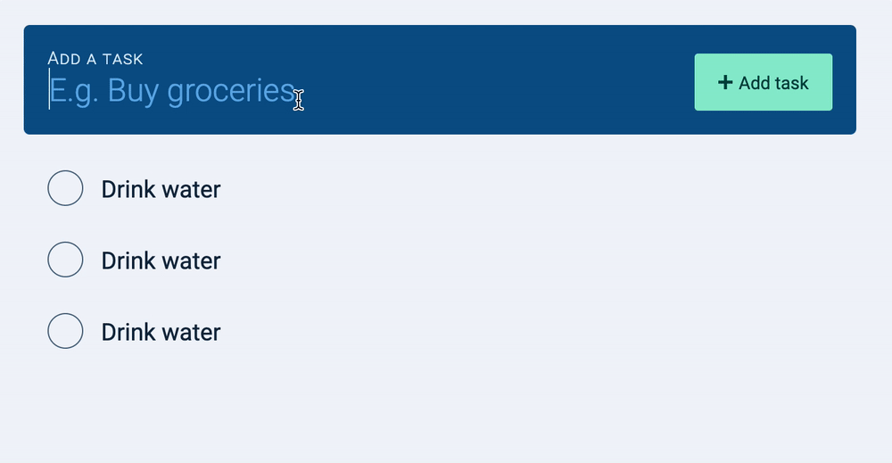
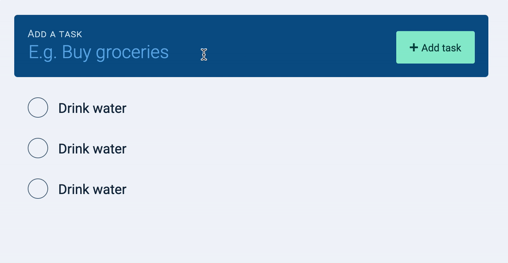
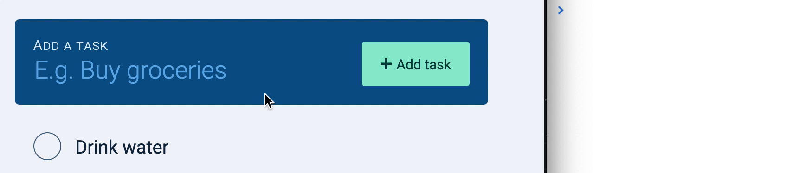
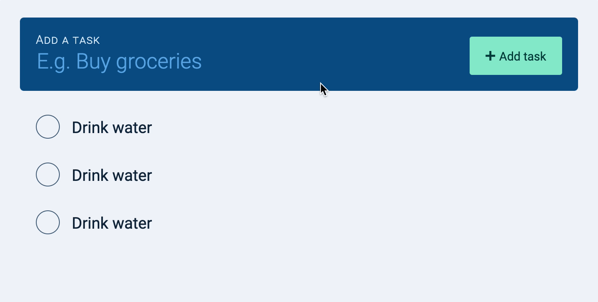
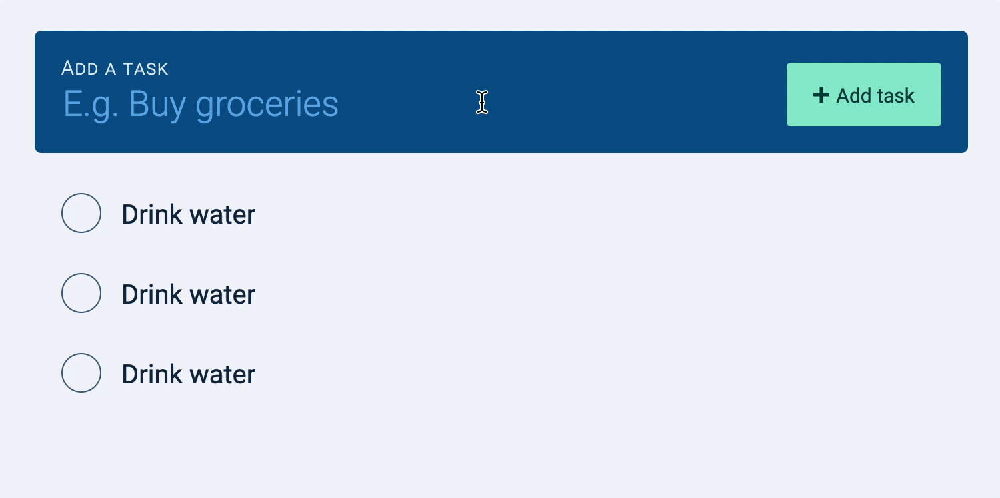
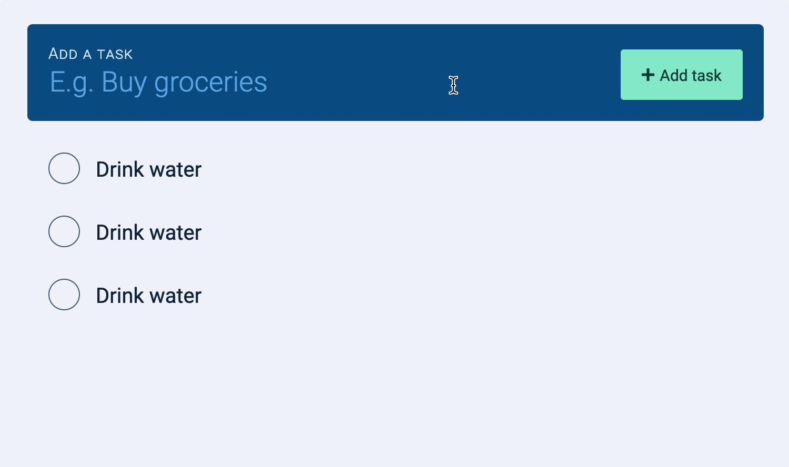

We want to add a task to the taskList when a user clicks on the “add task” button.

We also want to add a task to the taskList if the user presses the “Enter” button.

The best way to listen to both events (click and enter) is to listen to the form’s submit event.
const todolist = document.querySelector('.todolist')
todolist.addEventListener('submit', event => {
// Add a new task
})
Note: By default, the submit event navigates a user to the url mentioned it the action attribute. We want to prevent this behavior since we’re building custom functionality.
const todolist = document.querySelector('.todolist')
todolist.addEventListener('submit', event => {
event.preventDefault()
// Add a new task
})
There are three steps to creating a task:
Get what the user typed
Create the task element
Add the task element into the DOM
Getting what the user typed
First, we need to know what the user typed into the new task field. We can get this information through the input’s value property.
When we get the value, we also want to trim the contents so we don’t get any extra whitespaces.
todolist.addEventListener('submit', event => {
// ...
// Get value of task
const newTaskField = todolist.querySelector('input')
const inputValue = newTaskField.value.trim()
console.log(inputValue)
})

Creating a task element
To create a task, we need to create a <li> element. This element should have the .task class.
We need to populate the task’s innerHTML with the checkbox, label, the task name, and the delete button. Here, we can copy-paste the code from the HTML we wrote.
The checkbox in each task needs to have a unique id. And the <label> in each task needs a for attribute that links to the checkbox’s id. (Otherwise, you can’t check the correct checkbox).
The best way to create a unique id is to use generateUniqueString. We talked about this in “Generating unique IDs”.
We can add the taskElement to the DOM with appendChild.
const taskList = todolist.querySelector('.todolist__tasks')
todolist.addEventListener('submit', event => {
// ...
// Add task element to the DOM
taskList.appendChild(taskElement)
})
Here’s what you should have:

UX Improvements
Notice the task remains in the new task field after we added it to the DOM? This makes it hard for users to enter a second task. They have to delete the first task manually before they can enter a new one.
We can make it easy for them by removing text from the new task field.
todolist.addEventListener('submit', event => {
event.preventDefault()
// Get what the user typed
// Clear the new task field
newTaskField.value = ''
// Create task
// Append to the DOM
})

Next, notice input loses focus if you click on the “add task” button? Again, this makes it hard for users to enter a second task. They have to click on the input again before they can type.
We can put focus back onto the new task form to make it easy for users to enter a second task.
todolist.addEventListener('submit', event => {
event.preventDefault()
// Get what the user typed
// Clear the new task field
// Bring focus back to input field
newTaskField.focus()
// Create task
// Append to the DOM
})
Another thing.
Right now, users can add an empty task to the taskList.

We want to prevent empty tasks from getting into the taskList. We can do this by aborting the listener (and not do anything) unless inputValue is truthy.
todolist.addEventListener('submit', event => {
event.preventDefault()
// Get what the user typed
// Clear the new task field
// Bring focus back to input field
// Prevent adding of empty task
if (!inputValue) return
// Create task
// Append to the DOM
})
Cleaning up
Our event listener is pretty long now. We can make it easier to understand by abstracting the part that makes the task into a separate function.